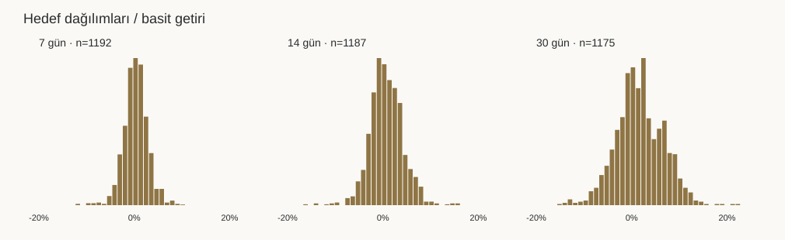
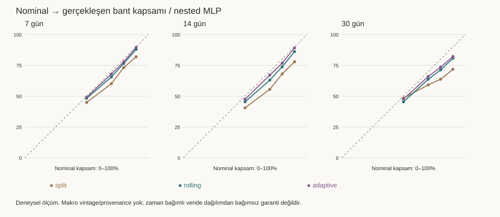
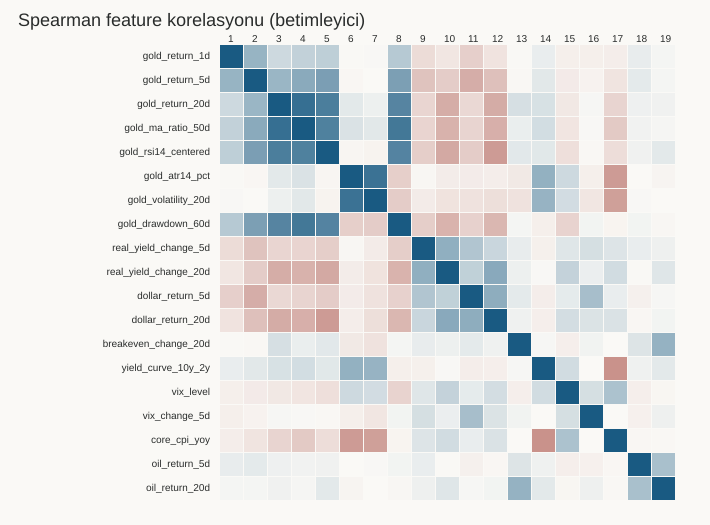

Snapshot SHA256: c7a87939ea08cac69112b12576015dabd730d57f475fa1d4b1aca67c7cd3e240
c7a87939ea08cac69112b12576015dabd730d57f475fa1d4b1aca67c7cd3e240
43 deney × 3 vade · 3 purged expanding fold. Tüm deneyler · Özet CSV · Tam metrikler


